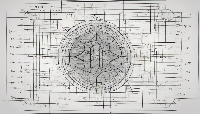

November 4-5, 2024
Aveiro,
Portugal


History
The Paris-Rocquencourt Research Center of INRIA (French National Institute for Informatics and Automatics), the Department of Sanskrit Studies at University of Hyderabad and the NLP Department of the Rashtriya Sanskrit Vidyapeetha at Tirupati joined together to discuss the inter-operability issues and develop standards for various linguistics tools for the analysis of Sanskrit. The joint team (headed by Gérard Huet from INRIA and Amba Kulkarni from University of Hyderabad) decided to hold the first workshop in October 2007. It was also decided to open the meeting to outside researchers and to profit of the workshop to organize the First International Sanskrit Computational Linguistic Symposium at this occasion. The symposium was hosted by Gérard Huet at INRIA Paris-Rocquencourt from 29 - 31 Oct 2007, and led to the formation of the International Sanskrit Computational Linguistics Consortium.
The First symposium was a success which was evident from the enthusiasm among the participants and also proposers to hold the second symposium. Thus it was certain that this activity was going to stay. Peter Scharf, Director of the International Digital Sanskrit Library Integration project (IDSLI) at Brown University, hosted the Second International Sanskrit Computational Linguistics Symposium and Sanskrit Library Workshop at Brown University in Providence, RI, USA from 15 - 17 May 2008.
A formal Steering Committee consisting of Brendan Gillon, Gérard Huet, Amba Kulkarni, Malhar Kulkarni and Peter Scharf was formed to regulate the Symposium event. The Third International Sanskrit Computational Linguistics Symposium was hosted by Amba Kulkarni from 15 - 17 Jan 2009, at the University of Hyderabad.
The Fourth International Sanskrit Computational Linguistics Symposium was convened by Prof Girish Nath Jha at Jawaharlal Nehru University, New Delhi, INDIA, from 10-12 Dec 2010.
Prof. Malhar Kulkarni hosted the Fifth International Sanskrit Computational Linguistics Symposium IIT Bombay from 4-6 Jan 2013.
In 2015, the World Sanskrit Conference contacted us to organise a session on Sanskrit Computational Linguistics at Bangkok. In 2018 at the 17th World Sanskrit Conference, at Vancouver we organised a session on Computational Sanskrit and Digital Humanities.
The Sixth International Sanskrit Computational Linguistics Symposium was hosted by Pawan Goyal from 23-25 Oct 2019 at IIT Kharagpur.
In 2021 (postponed to 2023) at the 18th World Sanskrit Conference, at Canberra (held Online), the third session on Computational Sanskrit and Digital Humanities was held.
The Seventh International Sanskrit Computational Linguistics Symposium would take place from 15-17 Feb 2024 at Auroville, Puducherry.
Publications of ISCLS
- Post-conference selected and edited papers from the First two symposia appear in LNCS 5402, the inaugural volume on Sanskrit Computational Linguistics in Springer’s series Lecture Notes in Artificial Intelligence (LNAI), a subseries of Lecture Notes in Computer Science (LNCS).
- Proceedings of the third symposium appear in LNCS 5406.
- Proceedings of the fourth symposium appear in LNCS 6465.
- Proceedings of the fifth symposium are published as Recent Researches in Sanskrit Computational Linguistics by D K PrintWorld.
- Proceedings of the Sixth Symposium are part of the ACL Anthology.
Publications of WSC Sessions
- Proceedings of the ‘Sanskrit and Computational Linguistics’ session at the 16th WSC at Bangkok Thailand were published by D K Publishers and Distributors.
- Proceedings of the ‘Computational Sanskrit and Digital Humanities’ session at the 17th WSC at Vancouver were published offline by D K Publishers and Distributors, and are available online here.
- Proceedings of the ‘Computational Sanskrit and Digital Humanities’ session at the 18th WSC held online by Astralian National University, Canberra are published by ACL Anthology and would be available online soon.